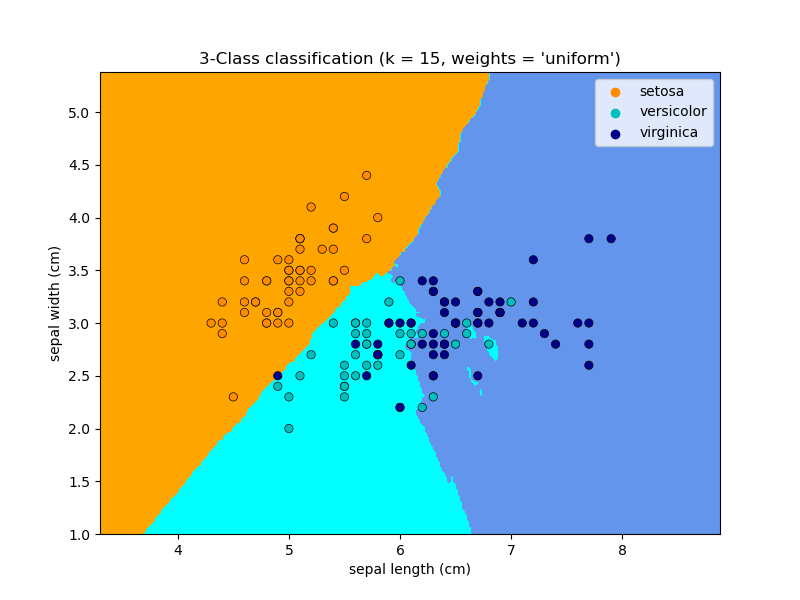

Aprendizaje supervisado: predicción de una variable de salida a partir de observaciones de alta dimensión¶
El problema resuelto en el aprendizaje supervisado
El aprendizaje supervisado consiste en aprender el vínculo entre dos conjuntos de datos: los datos observados X y una variable externa y que estamos tratando de predecir, normalmente llamada «objetivo» o «etiquetas». La mayoría de las veces, y es un arreglo 1D de longitud n_samples.
Todos los estimadores supervisados en scikit-learn implementan un método fit(X, y) para ajustar el modelo y un método predict(X) que, dadas las observaciones sin etiquetar X, devuelve las etiquetas predichas y.
Vocabulario: clasificación y regresión
Si la tarea de predicción consiste en clasificar las observaciones en un conjunto de etiquetas finitas, es decir, en «nombrar» los objetos observados, se dice que la tarea es de clasificación. En cambio, si el objetivo es predecir una variable objetivo continua, se dice que es una tarea de regresión.
Al hacer la clasificación en scikit-learn, y es un vector de enteros o cadenas.
Nota: Ver la Introduction to machine learning with scikit-learn Tutorial para un rápido repaso del vocabulario básico de aprendizaje automático utilizado dentro de scikit-learn.
El vecino más cercano y la maldición de la dimensionalidad¶
Classifying irises:
El conjunto de datos del iris es una tarea de clasificación que consiste en identificar 3 tipos diferentes de iris (Setosa, Versicolor y Virginica) a partir de la longitud y anchura de sus pétalos y sépalos:
>>> import numpy as np
>>> from sklearn import datasets
>>> iris_X, iris_y = datasets.load_iris(return_X_y=True)
>>> np.unique(iris_y)
array([0, 1, 2])
clasificador de vecinos más cercanos (k-Nearest neighbors)¶
El clasificador más simple posible es el vecino más cercano: dada una nueva observación X_test, encuentra en el conjunto de entrenamiento (es decir, los datos utilizados para entrenar el estimador) la observación con el vector de características más cercano. (Por favor, ver la sección Vecino más cercano de la documentación online de Scikit-learn para más información sobre este tipo de clasificador.)
Conjunto de entrenamiento y conjunto de pruebas
Mientras se experimenta con cualquier algoritmo de aprendizaje, es importante no probar la predicción de un estimador en los datos utilizados para ajustar el estimador, ya que no se estaría evaluando el rendimiento del estimador en nuevos datos. Por eso los conjuntos de datos suelen dividirse en datos de entrenamiento y de prueba.
Ejemplo de clasificación KNN (k vecinos más cercanos):
>>> # Split iris data in train and test data
>>> # A random permutation, to split the data randomly
>>> np.random.seed(0)
>>> indices = np.random.permutation(len(iris_X))
>>> iris_X_train = iris_X[indices[:-10]]
>>> iris_y_train = iris_y[indices[:-10]]
>>> iris_X_test = iris_X[indices[-10:]]
>>> iris_y_test = iris_y[indices[-10:]]
>>> # Create and fit a nearest-neighbor classifier
>>> from sklearn.neighbors import KNeighborsClassifier
>>> knn = KNeighborsClassifier()
>>> knn.fit(iris_X_train, iris_y_train)
KNeighborsClassifier()
>>> knn.predict(iris_X_test)
array([1, 2, 1, 0, 0, 0, 2, 1, 2, 0])
>>> iris_y_test
array([1, 1, 1, 0, 0, 0, 2, 1, 2, 0])
La maldición de la dimensionalidad¶
Para que un estimador sea eficiente, es necesario que la distancia entre puntos vecinos sea menor que algún valor \(d\), que depende del problema. En una dimensión, esto requiere una media de \(n \sim 1/d\) puntos. En el contexto del ejemplo anterior de \(k\)-NN, si los datos están descritos por una sola característica con valores que van de 0 a 1 y con \(n\) observaciones de entrenamiento, entonces los nuevos datos no estarán más lejos que \(1/n\). Por lo tanto, la regla de decisión del vecino más cercano será eficiente en cuanto \(1/n\) sea pequeño en comparación con la escala de variaciones de características entre clases.
Si el número de características es \(p\), ahora se requieren \(n \sim 1/d^p\) puntos. Digamos que necesitamos 10 puntos en una dimensión: ahora se requieren \(10^p\) puntos en las dimensiones \(p\) para pavimentar el espacio \([0, 1]\). A medida que \(p\) se hace grande, el número de puntos de entrenamiento necesarios para un buen estimador crece exponencialmente.
Por ejemplo, si cada punto es un solo número (8 bytes), entonces un estimador \(k\)-NN eficaz en una mísera dimensión \(p \sim 20\) requeriría más datos de entrenamiento que el tamaño actual estimado de todo Internet (±1000 Exabytes más o menos).
Esto se denomina maldición de la dimensionalidad y es un problema central que aborda el aprendizaje automático.
Modelo lineal: de la regresión a la dispersión¶
Conjunto de datos sobre la diabetes
El conjunto de datos sobre la diabetes consta de 10 variables fisiológicas (edad, sexo, peso, presión arterial) medidas en 442 pacientes, y una indicación de la progresión de la enfermedad al cabo de un año:
>>> diabetes_X, diabetes_y = datasets.load_diabetes(return_X_y=True)
>>> diabetes_X_train = diabetes_X[:-20]
>>> diabetes_X_test = diabetes_X[-20:]
>>> diabetes_y_train = diabetes_y[:-20]
>>> diabetes_y_test = diabetes_y[-20:]
La tarea en cuestión es predecir la progresión de la enfermedad a partir de variables fisiológicas.
Regresión lineal¶
LinearRegression, en su forma más sencilla, ajusta un modelo lineal al conjunto de datos ajustando un conjunto de parámetros para que la suma de los residuos al cuadrado del modelo sea lo más pequeña posible.
Modelos lineales: \(y = X\beta + \epsilon\)
\(X\): datos
\(y\): objetivo variable
\(\beta\): Coeficientes
\(\epsilon\): Ruido de observación
>>> from sklearn import linear_model
>>> regr = linear_model.LinearRegression()
>>> regr.fit(diabetes_X_train, diabetes_y_train)
LinearRegression()
>>> print(regr.coef_)
[ 0.30349955 -237.63931533 510.53060544 327.73698041 -814.13170937
492.81458798 102.84845219 184.60648906 743.51961675 76.09517222]
>>> # The mean square error
>>> np.mean((regr.predict(diabetes_X_test) - diabetes_y_test)**2)
2004.56760268...
>>> # Explained variance score: 1 is perfect prediction
>>> # and 0 means that there is no linear relationship
>>> # between X and y.
>>> regr.score(diabetes_X_test, diabetes_y_test)
0.5850753022690...
Contracción¶
Si hay pocos puntos de datos por dimensión, el ruido en las observaciones induce una alta varianza:
>>> X = np.c_[ .5, 1].T
>>> y = [.5, 1]
>>> test = np.c_[ 0, 2].T
>>> regr = linear_model.LinearRegression()
>>> import matplotlib.pyplot as plt
>>> plt.figure()
>>> np.random.seed(0)
>>> for _ in range(6):
... this_X = .1 * np.random.normal(size=(2, 1)) + X
... regr.fit(this_X, y)
... plt.plot(test, regr.predict(test))
... plt.scatter(this_X, y, s=3)
Una solución en el aprendizaje estadístico de alta dimensión es reducir los coeficientes de regresión a cero: es probable que dos conjuntos de observaciones elegidos al azar no estén correlacionados. Esto se denomina regresión Ridge:
>>> regr = linear_model.Ridge(alpha=.1)
>>> plt.figure()
>>> np.random.seed(0)
>>> for _ in range(6):
... this_X = .1 * np.random.normal(size=(2, 1)) + X
... regr.fit(this_X, y)
... plt.plot(test, regr.predict(test))
... plt.scatter(this_X, y, s=3)
Este es un ejemplo de compensación entre sesgo y varianza: cuanto mayor sea el parámetro alpha de la cresta, mayor será el sesgo y menor la varianza.
Podemos elegir alpha para minimizar el error de la izquierda, esta vez utilizando el conjunto de datos de la diabetes en lugar de nuestros datos sintéticos:
>>> alphas = np.logspace(-4, -1, 6)
>>> print([regr.set_params(alpha=alpha)
... .fit(diabetes_X_train, diabetes_y_train)
... .score(diabetes_X_test, diabetes_y_test)
... for alpha in alphas])
[0.5851110683883..., 0.5852073015444..., 0.5854677540698...,
0.5855512036503..., 0.5830717085554..., 0.57058999437...]
Nota
La captura de ruido en los parámetros ajustados que impide que el modelo se generalice a nuevos datos se denomina sobreajuste. El sesgo introducido por la regresión ridge se denomina regularización.
Dispersión¶
Sólo se ajusta a las características 1 y 2
Nota
Una representación del conjunto de datos de la diabetes completo implicaría 11 dimensiones (10 dimensiones de características y una de la variable objetivo). Es difícil desarrollar una intuición sobre dicha representación, pero puede ser útil tener en cuenta que sería un espacio bastante vacío.
Podemos ver que, aunque la característica 2 tiene un fuerte coeficiente en el modelo completo, transmite poca información sobre y cuando se considera con la característica 1.
Para mejorar el condicionamiento del problema (es decir, mitigar la La maldición de la dimensionalidad), sería interesante seleccionar sólo las características informativas y establecer en cero las no informativas, como la característica 2. La regresión Ridge disminuirá su contribución, pero no la establecerá en cero. Otro enfoque de penalización, llamado Lasso (operador de contracción y reducción mínima absoluta), puede establecer algunos coeficientes a cero. Estos métodos se denominan métodos dispersos y la dispersión puede verse como una aplicación de la navaja de Occam: prefiera los modelos más simples.
>>> regr = linear_model.Lasso()
>>> scores = [regr.set_params(alpha=alpha)
... .fit(diabetes_X_train, diabetes_y_train)
... .score(diabetes_X_test, diabetes_y_test)
... for alpha in alphas]
>>> best_alpha = alphas[scores.index(max(scores))]
>>> regr.alpha = best_alpha
>>> regr.fit(diabetes_X_train, diabetes_y_train)
Lasso(alpha=0.025118864315095794)
>>> print(regr.coef_)
[ 0. -212.437... 517.194... 313.779... -160.830...
-0. -187.195... 69.382... 508.660... 71.842...]
Diferentes algoritmos para el mismo problema
Se pueden utilizar diferentes algoritmos para resolver el mismo problema matemático. Por ejemplo, el objeto Lasso de scikit-learn resuelve el problema de regresión del lazo utilizando un método de descenso por coordenadas, que es eficiente en grandes conjuntos de datos. Sin embargo, scikit-learn también proporciona el objeto LassoLars utilizando el algoritmo LARS, que es muy eficiente para problemas en los que el vector de pesos estimado es muy disperso (es decir, problemas con muy pocas observaciones).
Clasificación¶
Para la clasificación, como en la tarea de etiquetado de iris, la regresión lineal no es el enfoque adecuado, ya que dará demasiado peso a los datos alejados de la frontera de decisión. Un enfoque lineal consiste en ajustar una función sigmoidea o una función logística:
>>> log = linear_model.LogisticRegression(C=1e5)
>>> log.fit(iris_X_train, iris_y_train)
LogisticRegression(C=100000.0)
Esto se conoce como LogisticRegression.
Clasificación multiclase
Si tienes varias clases que predecir, una opción que se utiliza a menudo es ajustar clasificadores de uno contra todos y luego utilizar una heurística de votación para la decisión final.
Contracción y dispersión con regresión logística
El parámetro C controla la cantidad de regularización en el objeto LogisticRegression: un valor grande de C resulta en menos regularización. Con penalty="l2" se obtiene Contracción (es decir, coeficientes no dispersos), mientras que con penalty="l1" se obtiene Dispersión.
Ejercicio
Intenta clasificar el conjunto de datos de dígitos con los vecinos más cercanos y un modelo lineal. Deja fuera el último 10% y comprueba el rendimiento de la predicción con estas observaciones.
from sklearn import datasets, neighbors, linear_model
X_digits, y_digits = datasets.load_digits(return_X_y=True)
X_digits = X_digits / X_digits.max()
Se puede descargar una solución aquí.
Máquinas de vectores de soporte (SVM)¶
SVM lineales¶
Máquinas de Vectores de Soporte pertenecen a la familia de los modelos discriminantes: tratan de encontrar una combinación de muestras para construir un plano que maximice el margen entre las dos clases. La regularización se establece mediante el parámetro C: un valor pequeño de C significa que el margen se calcula utilizando muchas o todas las observaciones alrededor de la línea de separación (más regularización); un valor grande de C significa que el margen se calcula sobre las observaciones cercanas a la línea de separación (menos regularización).
SVM no regularizado¶
SVM regularizada (predeterminado)¶
Las SVM pueden utilizarse en regresión –SVR (Regresión con Vectores de Soporte)–, o en clasificación –SVC (Clasificación por Vectores de Soporte).
>>> from sklearn import svm
>>> svc = svm.SVC(kernel='linear')
>>> svc.fit(iris_X_train, iris_y_train)
SVC(kernel='linear')
Advertencia
Normalización de los datos
Para muchos estimadores, incluidos los SVM, tener conjuntos de datos con desviación estándar unitaria para cada característica es importante para obtener una buena predicción.
Uso de los núcleos (kernels)¶
Las clases no siempre son linealmente separables en el espacio de características. La solución es construir una función de decisión que no sea lineal, sino polinómica. Esto se hace utilizando el truco del núcleo que puede verse como la creación de una energía de decisión mediante la colocación de núcleos en las observaciones:
Núcleo lineal¶
>>> svc = svm.SVC(kernel='linear')
Núcleo polinomial¶
>>> svc = svm.SVC(kernel='poly',
... degree=3)
>>> # degree: polynomial degree
Núcleo RBF (Función de Base Radial)¶
>>> svc = svm.SVC(kernel='rbf')
>>> # gamma: inverse of size of
>>> # radial kernel
Ejemplo interactivo
Ver la SVM GUI para descargar svm_gui.py; añadir puntos de datos de ambas clases con el botón derecho e izquierdo, ajustar el modelo y cambiar parámetros y datos.
Ejercicio
Intente clasificar las clases 1 y 2 del conjunto de datos del iris con SVMs, con las 2 primeras características. Deja fuera el 10% de cada clase y prueba el rendimiento de la predicción con estas observaciones.
Atención: las clases están ordenadas, no dejes de lado el último 10%, estarías probando en una sola clase.
Pista: Puedes utilizar el método decision_function en una cuadrícula para obtener intuiciones.
iris = datasets.load_iris()
X = iris.data
y = iris.target
X = X[y != 0, :2]
y = y[y != 0]
Se puede descargar una solución aquí